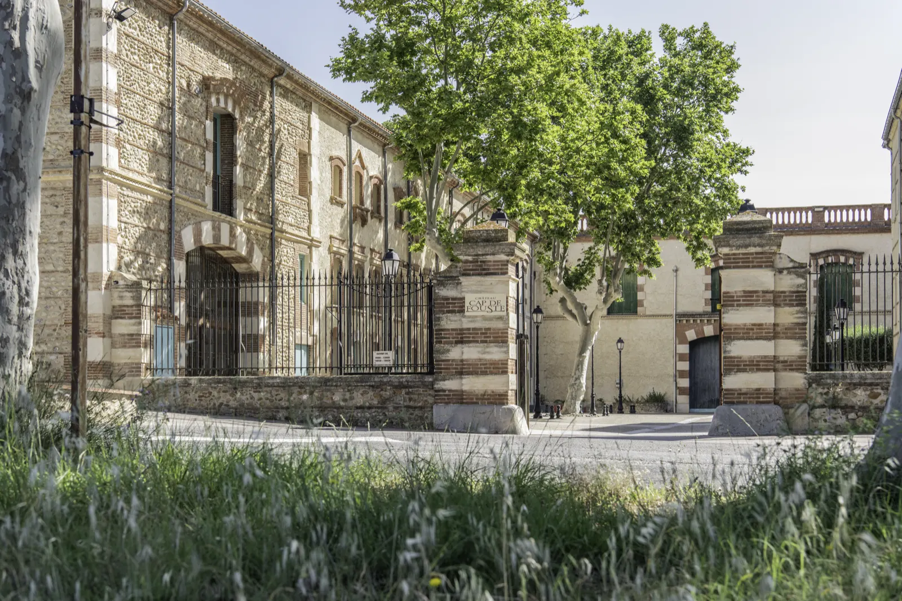
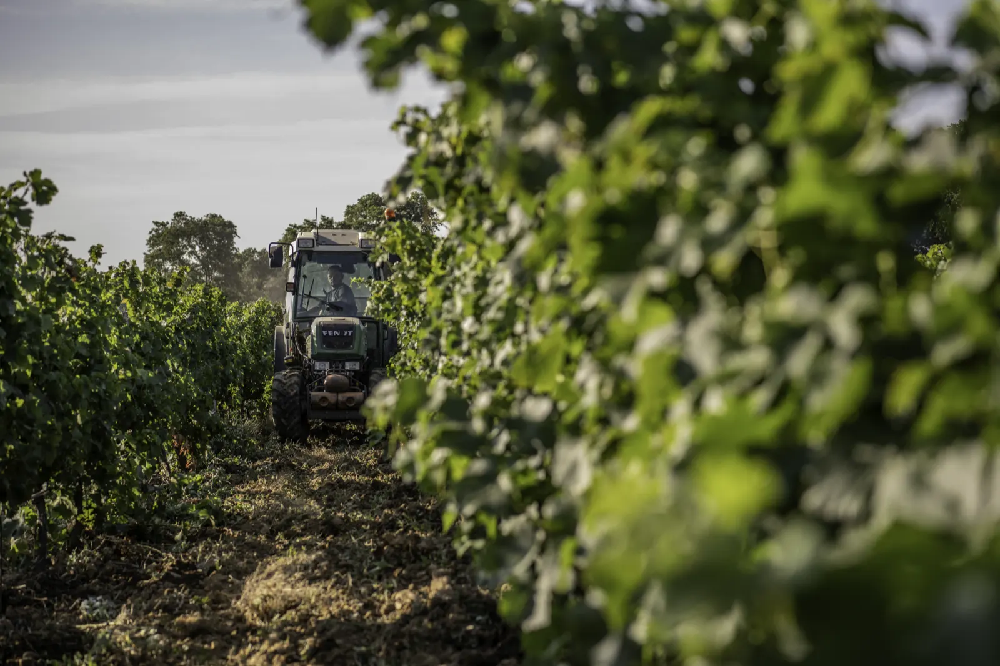
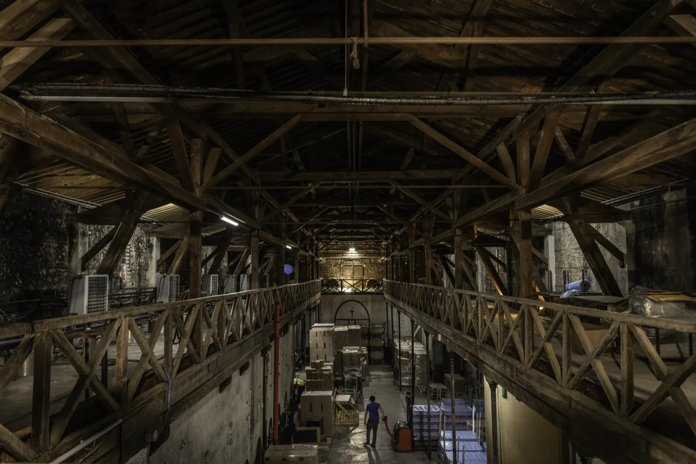
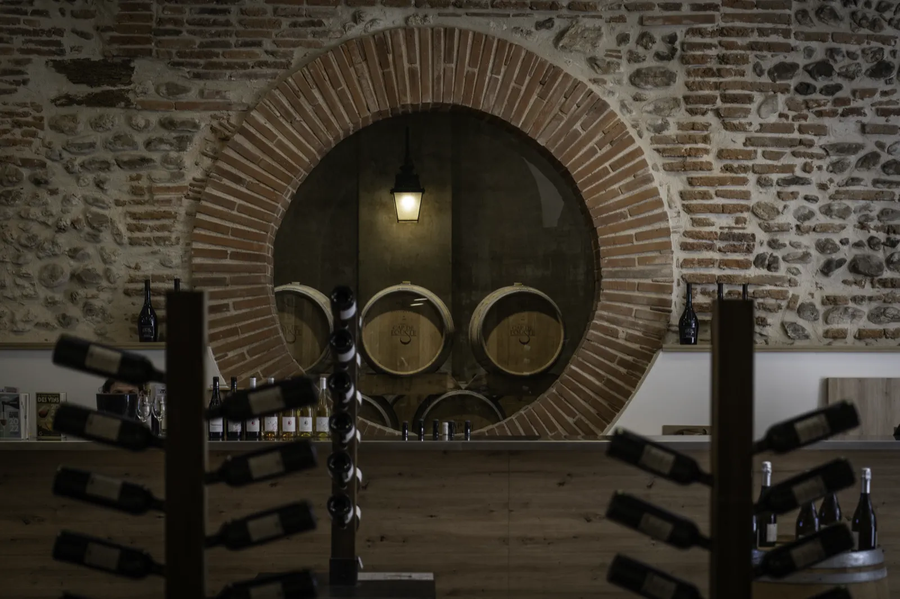
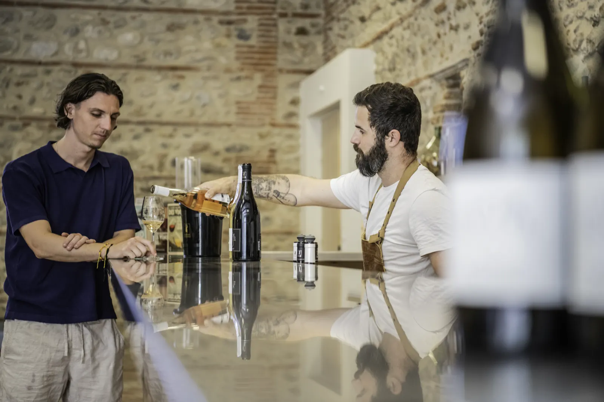
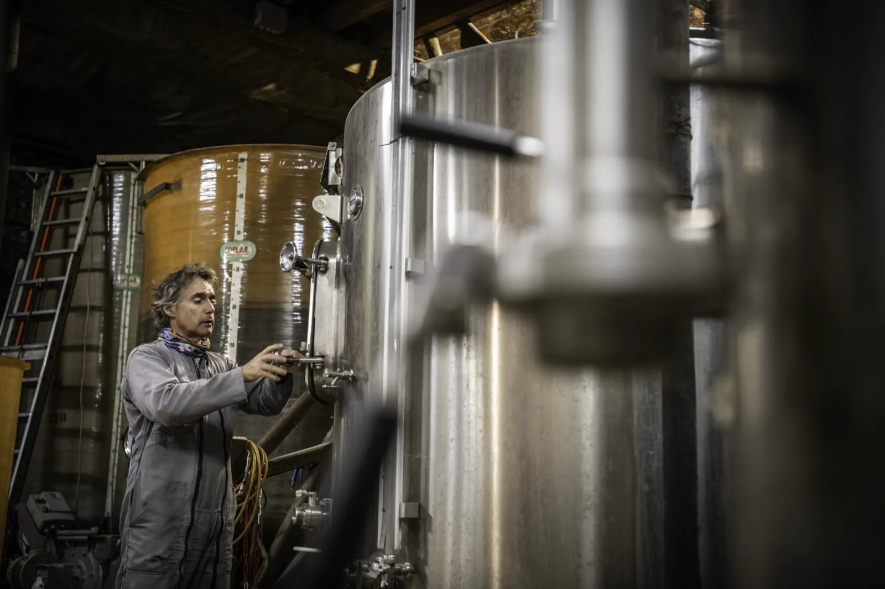
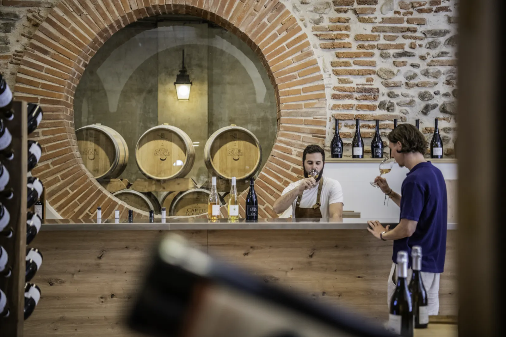
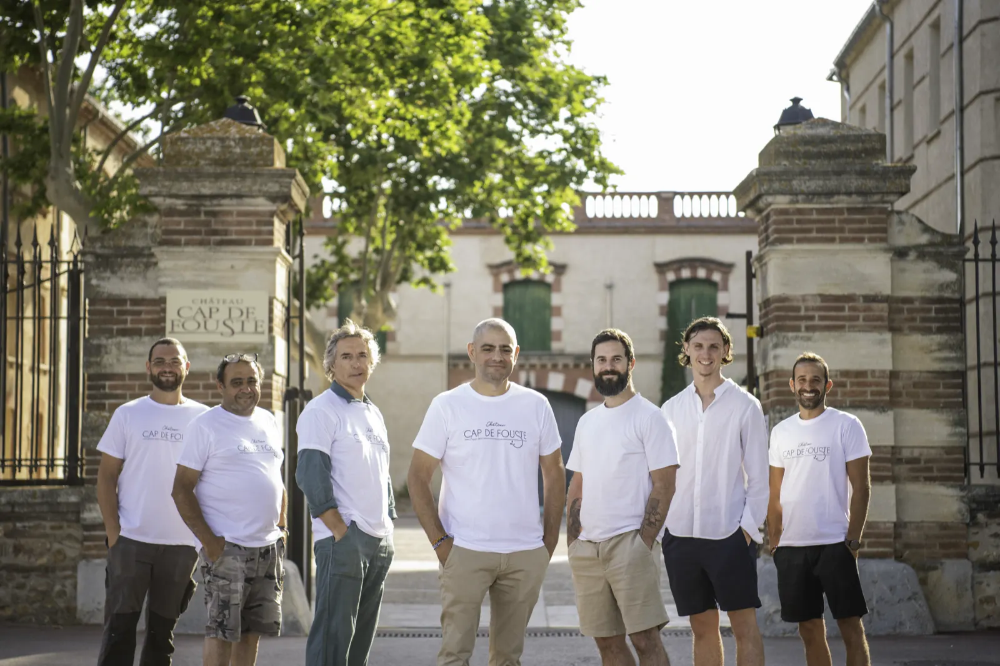
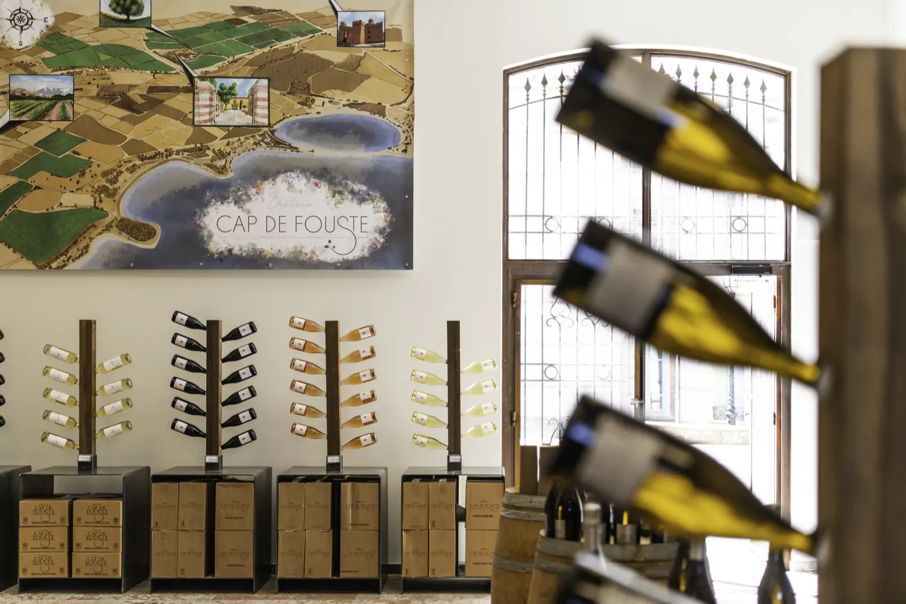

Au cœur du terroir catalan, entre mer et montagne.
Des vins authentiques, élevés avec passion sur les terres ensoleillées du Roussillon. Ici, chaque cuvée raconte une histoire de nature, de tradition et de partage.
- 1860parmi les plus anciennes propriétés du département
- 60 hectaresde vigne, sur plus de 100
- 2 hectaresd’oliviers
- Bio et HVE3bio depuis 2023, HVE3 depuis 2019
- Jusqu’à 90invités dans la salle de réception
Depuis 1860, implanté au cœur du Roussillon.
Sur la plaine ensoleillée, entre Méditerranée et contreforts des Pyrénées, le château cultive son héritage depuis le XIXe siècle.
Ancrée dans les terres catalanes, la propriété figure parmi les plus anciennes du département. Transmis de main en main, le domaine a vu naître des générations de vignerons passionnés, porteurs d’un savoir-faire ancestral.
Sous le souffle de la tramontane, les cépages s’épanouissent entre soleil généreux et sols argilo-calcaires. Les parcelles murmurent leur histoire, les cuvées en traduisent l’empreinte.
Parcourir la carte interactive du domaine



Le caveau, là où tout commence.
Vous entrez dans une cave voûtée en briques catalanes rouges et galets, patinées par le temps, qui gardent naturellement une fraîcheur constante. Rouges charpentés, blancs frais et fruités, rosés légers et vins doux naturels : on vous oriente selon vos préférences, vous goûtez, vous échangez, vous repartez avec vos bouteilles et nos conseils.
- Agriculture biologique depuis 2023
- HVE3 depuis 2019

La cave, au plus près de la matière.
Elle ne se visite pas comme un simple local technique. Entre murs de cayrous et odeurs de moût en fermentation, c’est ici que les vins prennent forme.
- Raisins triés, égrappés, pressés, puis mis en cuve
- Températures, densité, levures, arômes : tout est observé
- Chaque jour, on goûte, on mesure, on interprète
L’objectif n’est pas de contrôler le vin, mais de l’accompagner avec justesse.
Balades, dégustations et rencontres vigneronnes.
La visite commence par une plongée dans l’histoire du château, racontée par Rémi, responsable œnotourisme. Puis les coulisses de la vinification, des gestes précis aux choix d’assemblage, et une dégustation commentée pour révéler toutes les nuances des vins du domaine.
-
Visite et dégustation
10 € par personneTous les mardis et jeudis à 17 h.
-
Ateliers accords mets et vins
20 € par personneFromages sélectionnés par un artisan fromager, ou chocolats d’un maître chocolatier. Sur réservation, 6 personnes minimum.

La salle de réception du château.
Le château ouvre sa salle de réception, avec sa cour intérieure et son parc arboré. Vous choisissez librement votre traiteur, et le devis se demande en ligne.

Une équipe disponible et passionnée.
- Maxouvrier polyvalent cave
- Etiennetractoriste
- Frédéricouvrier polyvalent vigne
- Sébastienrégisseur
- Rémiresponsable boutique et œnotourisme
- Valentincommercial
- Sylvainemployé polyvalent
Sur la photo, de gauche à droite.

Le caveau, depuis chez vous.
Vous ne pouvez pas venir jusqu’au domaine ? La boutique en ligne vous ouvre les portes du caveau : toute la gamme y est disponible.
- Livraison en France métropolitaine
- Frais de port offerts dès 200 € d’achat
- Paiement sécurisé, expédition soignée
- Un service client pour vous conseiller